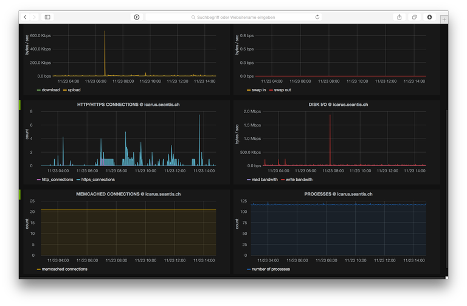

Services (DevOps)
Wir übernehmen die Betreuung und den Betrieb Ihrer IT-Lösung nach dem Rollout. Auf unserer Cloud Infrastruktur bieten wir Monitoring, Wartung, Support und Application Management.
Server Management
seantis verwaltet alle Server mit Konfigurationsmanagement Tools (u.a. Puppet und Ansible). Damit ist sichergestellt, dass die Konfiguration eines jeden Servers explizit gemacht und dokumentiert ist. Auch bieten uns die Konfigurationsmanagement Tools die Möglichkeit Konfigurationsänderungen und Updates kontrollierbar über alle Server sicher auszurollen.

Server Health Monitoring
Folgende Parameter der Server werden proaktiv überwacht und auf einem zentralen Events Service auf einem separaten Server gespeichert und visualisiert:
- CPU / MEMORY / SWAP
- DISK USAGE
- NETWORK TRAFFIC
- SWAPPINESS
- HTTP/HTTPS CONNECTIONS
- DISK I/O
- MEMCACHED CONNECTIONS
- PROCESSES
Service Monitoring (Ping)
Das Monitoring Tool ruft die Seiten periodisch auf und überwacht so deren Status. Ist eine Seite nicht erreichbar, weil der Webserver nicht richtig läuft, oder weil es ein Problem in der Applikation gibt, so schlägt das Monitoring Tool Alarm und ein Kreis von Personen wird per E-Mail/SMS in definierten Eskalationsstufen benachrichtigt.
Das Monitoring geschieht auf Applikationsebene (analog zu einem direkten Zugriff via Browser). Damit werden Ausfälle bzw. Probleme sofort direkt erkannt. Falls gewünscht können Verantwortliche des Kunden ab einer erhöhten Eskalationsstufe (z.B. 1h «down time») ebenfalls automatisch benachrichtigt werden.
Für das eigentliche Monitoring setzen wir auf einen externen Anbieter, welcher Websites dezentral mit Knoten verteilt über die ganze Welt überwacht (https://www.nodeping.com). Diese Monitoring-Infrastruktur selbst zu betreiben macht wenig Sinn, da diese so unabhängig wie möglich sein muss.
Wir bieten bewusst ein minimalistisch gehaltenes Management Dashboard. Dieses ist direkt (ohne Login) über eine URL aufzurufen und bietet einen Überblick über alle aktiven Services sowie deren Status. Das Management Dashboard ist bewusst so konzipiert (Responsive Design), dass es problemlos von einem Smartphone aufgerufen werden kann.
Der Web Monitor wird für den Kunden aufgesetzt und die entsprechenden Konfigurationen in der dahinterstehenden Monitoring Infrastruktur gemacht. Neue Services werden in den Monitor eingetragen, sobald sie aus der Staging- in die Production-Umgebung überführt werden. Das Management Dashboard bietet somit jederzeit einen Überblick über alle laufenden Services. Ein «down time» Monitoring mit SMS-Alerts wird eingerichtet, sobald ein Service von der Gruppe «Staging» in die Gruppe «Production» überführt wird.
Backup Services
Backups werden auf der Backup Infrastruktur von seantis gemacht. Das Backup erfolgt inkrementell, wird auf dem Quellsystem (Server) komprimiert und über eine sichere verschlüsselte Netzwerkverbindung auf einen dezidierten Offsite Backup Root-Server übertragen.
Der Backup Plan sieht sieht folgende inkrementelle Backups vor:
- tägliche Rotatation: 7 Tage Retension
- wöchentliche Rotation: 4 Wochen Retension
- monatliche Rotation: 3 Monate Retension
Der tägliche Backup-Prozess wird automatisch überwacht und seantis informiert, sollte es zu Problemen gekommen sein. seantis überprüft die Integrität der Daten auf der Harddisk (ZFS) Scrape).
Vom Offsite Backup Server werden die Daten einmal wöchentlich auf einen verschlüsselten Datenträger übertragen. Dieser Datenträger wird in einem Tresorfach bei einer Schweizer Bank hinterlegt. Die Datenträger im Schliessfach sind komplett entkoppelt und haben natürlich keine Netzwerk- bzw. Internetverbindung (Airgap Backup).
Während des seantis Backup Days werden die Backups auf virtuellen Servern eingespielt und damit überprüft, dass die Backups auch wirklich verwendbar sind. Die regelmässige Überprüfung auf Wiederherstellbarkeit (Restore Tests) ist somit auch sichergestellt.
Service Level Agreement (SLA)
Die Reaktionszeit und Verfügbarkeiten sind in einem Service Level Agreement mit dem Kunden definiert.
Ist auf Grund einer geplanten Serverwartung ein Service-Unterbruch zu erwarten so wird dieser vor dem Ereignis angekündigt. Die Information erfolgt über bei seantis über ein internes Tool (Schedule Maintenance), welches an eine definierte Kontaktliste eine standarisierte Email (inkl. Kalendereintrag) für das Wartungsfenster verschickt.
Es wird ein kurzes Betriebshandbuch mit Kontaktadressen, Verzeichnis der Services sowie den relevanten URLs erstellt.